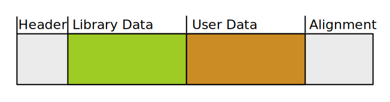

Using C-Libraries in Rust
Andreas Monitzer
El rust de vienna, 2019-11-26
Overview
- Why
- Why Not
- How
- Oh My
Why
- Ubuntu 19.04 library packages: 6555
- existing codebase
What's Different in Rust?
- no C!
- inlining
- cargo & build.rs
Why Not
unsafe- build library from source?
- slow compilation
How
extern "C" {
pub fn sqrt(x: f64) -> f64;
}
fn main() {
println!("sqrt(2) = {}", unsafe { sqrt(2.0) });
}
Custom Libraries
build.rs
fn main() {
println!("cargo:rustc-link-lib=foo");
println!("cargo:rustc-link-search=bar");
}
Rust-Bindgen
https://rust-lang.github.io/rust-bindgen/
Uses LLVM/clang to compile C code into Rust bindings.
Supports C and a parts of C++.
Example
typedef struct CoolStruct {
int x;
int y;
} CoolStruct;
void cool_function(int i, char c, CoolStruct* cs);
#[repr(C)]
pub struct CoolStruct {
pub x: ::std::os::raw::c_int,
pub y: ::std::os::raw::c_int,
}
extern "C" {
pub fn cool_function(i: ::std::os::raw::c_int,
c: ::std::os::raw::c_char,
cs: *mut CoolStruct);
}
Raw Pointers in Rust
*mut Foo: mutable pointer to type Foo
*const Bar: constant pointer to type Bar
let foo = Foo {…};
let foo_ptr: *mut Foo = Box::into_raw(Box::new(foo));
let foo_ref: Option<&Foo> = unsafe { foo.as_ref() };
let foo: Box<Foo> = unsafe { Box::from_raw(foo_ptr) };
Callbacks
#[repr(C)]
pub struct Foo {
pub bar: ::std::option::Option<
unsafe extern "C" fn(self_: *mut Foo)
-> ::std::os::raw::c_int,
>,
}
extern "C" fn do_bar(self_: *mut Foo) {
let foo = unsafe { Box::from_raw(self_) };
// …
Box::into_raw(foo);
}
let foo = Box::new(Foo {
bar: Some(do_bar)
});
Build System
build.rs
fn main() {
let bindings = bindgen::builder()
.header("wrapper.h")
.whitelist_function("my_.*_function")
.generate()
.unwrap();
bindings.write_to_file("./bindings.rs").unwrap();
}
Oh My
What C libraries do:

example solution